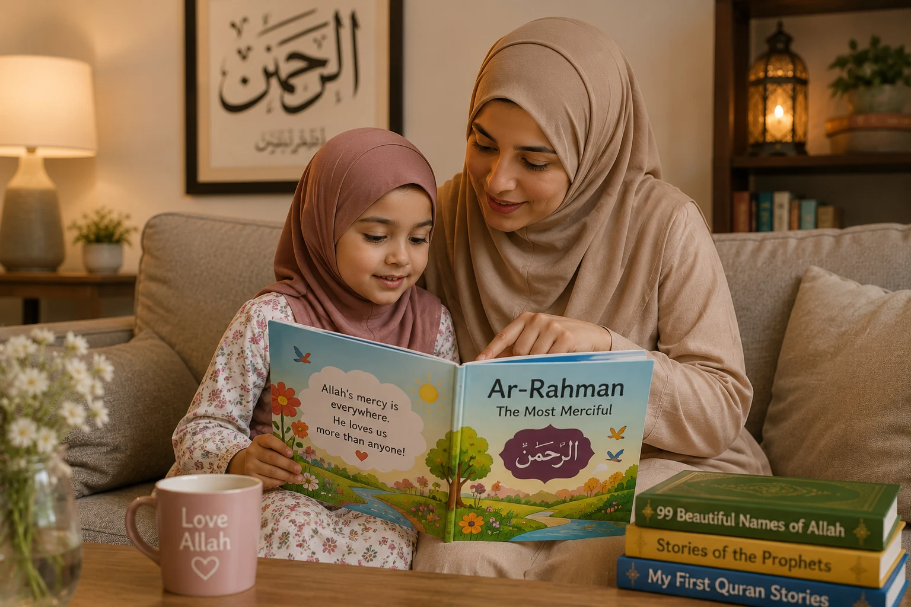

As Muslim parents, our ultimate goal is not just to raise children who know about Allah, but children who deeply love Him. Knowledge without love can lead to a mechanical, fear-based practice of Islam that children often abandon when they become independent. But when a child's heart is connected to Allah through love, mercy, and gratitude, their faith becomes an unshakeable anchor. In this comprehensive guide, we will explore practical, heart-softening ways to nurture a lifelong, joyful love for Allah in your children.
📖 In This Complete Guide, You'll Learn:
- Why "Love Before Rules" is the most critical principle in Islamic parenting
- How to introduce Allah to toddlers using tangible, positive examples
- Practical ways to teach Allah's Beautiful Names (Asma ul-Husna) in daily life
- How to make Salah and Dua feel like a joyful privilege, not a chore
- The power of your own example: how your relationship with Allah shapes theirs
- How to gently correct misconceptions and fear-based narratives about Allah
🔑 Key Takeaways
- Always connect Allah's blessings to His love for your child ("Allah gave you this because He loves you").
- Focus on Allah's mercy (Ar-Rahman) and love (Al-Wadud) before introducing His punishment.
- Children learn more from what you do than what you say. Let them see your joy in worship.
- Never use Allah or the Prophet (PBUH) as a threat to enforce obedience.
- Make your home a place where Allah's name is mentioned with warmth, peace, and gratitude.
📑 In This Article
- The Golden Rule: Love Before Rules
- Introducing Allah to Toddlers (Ages 2-4)
- Teaching Allah's Beautiful Names in Daily Life
- Connecting with Allah Through Nature (Tafakkur)
- Making Salah and Dua a Joyful Experience
- The Power of Your Own Example
- Correcting Fear-Based Misconceptions
- Frequently Asked Questions
- Final Thoughts
The Golden Rule: Love Before Rules
One of the most common mistakes well-meaning Muslim parents make is introducing Islam to their children primarily through a lens of rules, restrictions, and fear. "Don't do this, Allah will be angry," or "If you lie, Allah will punish you." While accountability is a part of Islam, leading with it builds a fragile, fear-based faith.
The Prophet Muhammad (peace be upon him) never led with fear. He led with love, mercy, and hope. When building a child's relationship with Allah, the foundation must be love. Before a child learns what Allah forbids, they must overwhelmingly experience what Allah provides.
The Prophet (PBUH) said: "None of you will believe until I am more beloved to him than his father, his child, and all of mankind." (Bukhari 15)
— Sahih Al-Bukhari 15This love for the Prophet (PBUH) is a direct reflection of the love for Allah. We must make Allah and His Messenger the most beloved figures in our children's hearts through kindness, not coercion.
Introducing Allah to Toddlers (Ages 2-4)
Toddlers think concretely. They cannot grasp abstract theological concepts, but they understand love, gifts, and kindness. This is the perfect age to plant the seeds of Tawheed (the Oneness of Allah) in a positive, tangible way.
Practical Strategies:
- The "Allah Gave You" Game: When they eat a delicious strawberry, say, "Masha'Allah, Allah made this sweet strawberry for you because He loves you!" When they get a new toy, "Look at this! Allah is Ar-Razzaq (The Provider), and He gave this to you."
- Normalize Islamic Phrases: Say "Bismillah" before eating, "Alhamdulillah" after sneezing, and "SubhanAllah" when seeing something beautiful. Let them mimic you naturally.
- Keep it Positive: At this age, avoid talking about Hellfire, punishment, or Allah's anger. Their minds are not ready for it, and it can create unnecessary anxiety.
Teaching Allah's Beautiful Names in Daily Life
Allah has 99 Beautiful Names (Asma ul-Husna), but you don't need to teach them all at once. Pick 2-3 names and weave them into your daily conversations.
1. Ar-Rahman & Ar-Rahim (The Most Gracious, The Most Merciful)
When your child makes a mistake and apologizes, say: "I forgive you, and do you know who else forgives you? Allah! He is Ar-Rahman, the Most Merciful. He loves it when we say sorry."
2. Al-Wadud (The Most Loving)
When cuddling at bedtime, tell them: "You know, I love you very much. But do you know who loves you even more? Allah is Al-Wadud, the Most Loving. His love for you is bigger than the sky."
3. Al-Khaliq (The Creator)
When drawing or building with blocks, say: "You are such a great builder! And do you know who created you? Allah is Al-Khaliq, the Best of Creators."
Get a children's book about the 99 Names of Allah and read one name per week. Discuss how that name shows up in their own lives.
Connecting with Allah Through Nature (Tafakkur)
The Quran repeatedly commands us to reflect (Tafakkur) on the creation of the heavens and the earth. Nature is one of the most powerful, accessible tools to help children feel Allah's presence.
- Stargazing: On a clear night, point to the stars and say, "SubhanAllah, look how many stars Allah made, and He knows the exact location of every single one."
- Rain and Plants: When it rains, say, "Allah is sending water from the sky to help the plants grow and give us food. Let's say Alhamdulillah."
- Animals: When watching birds or insects, say, "Allah takes care of the birds and gives them food, and He takes care of us too. He is Ar-Razzaq."
These moments of wonder create a deep, emotional connection to the Creator that no textbook can replicate.
Making Salah and Dua a Joyful Experience
If Salah is presented as a burdensome chore or a source of conflict ("Go pray right now!"), children will resent it. We must reframe it as a special, joyful privilege.
For Salah:
- Let them have their own colorful, child-sized prayer mat and hijab/kufi.
- Let them stand next to you or in front of you during prayer. Praise their effort, even if they are just mimicking the movements.
- Explain Salah simply: "This is our special time to talk to Allah and say thank you for everything He gave us today."
For Dua:
- Make dua for them out loud so they hear it: "O Allah, make my child happy, healthy, and righteous."
- Encourage them to make dua for their own desires (a new toy, a good grade, a sick pet). When their dua is answered, remind them: "See? Allah heard you! He loves when you ask Him."
- Teach them short, powerful duas, like the one for protection or before eating.
The Parent's Ultimate Dua: "Rabbana hab lana min azwajina wa dhurriyatina qurrata a'yun..."
"Our Lord, grant us from among our wives and offspring comfort to our eyes and make us an example for the righteous." (Surah Al-Furqan 25:74)
The Power of Your Own Example
Children are brilliant observers. They may not listen to what you say, but they will absolutely mimic what you do. Your relationship with Allah is the blueprint for theirs.
If they see you:
- Rushing through Salah just to "get it over with"...
- Complaining about fasting or religious obligations...
- Getting angry and using religion to control them...
...they will subconsciously associate Islam with stress and negativity.
But if they see you:
- Finding peace and comfort in reading Quran...
- Smiling and making dua when facing a challenge...
- Showing immense gratitude (Shukr) for small blessings...
...they will naturally crave that same peace and connection. Be the Muslim you want your child to become.
Correcting Fear-Based Misconceptions
Sometimes, children pick up fear-based narratives from extended family, friends, or outdated teaching methods. It is crucial to gently correct these.
✅ Gentle Correction: "Allah is Al-Ghaffar, the Most Forgiving. He wants us to pray because it's good for our hearts, not because He wants to punish us. He loves it when we try our best, even if we make mistakes."
✅ Gentle Correction: "There is no bogeyman. Allah is Al-Hafiz, The Protector. He is always watching over you and keeping you safe. You can always talk to Him if you feel scared."
Always replace fear with hope, and mystery with the beautiful, logical truth of Tawheed.

Frequently Asked Questions
🌱 Start with One Small Change Today
You don't have to overhaul your entire parenting style overnight. Start with one thing: tonight, before your child sleeps, tell them one reason why Allah loves them. Watch how it softens their heart and yours.
What is your favorite way to teach your child about Allah's love? Share with us!
Final Thoughts
Raising a child who loves Allah is not about perfection; it's about intention. It's about creating a home where the name of Allah is associated with warmth, safety, gratitude, and joy. It's about being a living, breathing example of the mercy and kindness you want them to see in their Creator. The seeds you plant today through love, patience, and beautiful examples will Insha'Allah grow into a deeply rooted, unshakeable Iman that will protect them for the rest of their lives. May Allah make our children the coolness of our eyes and lovers of His Deen. Ameen.